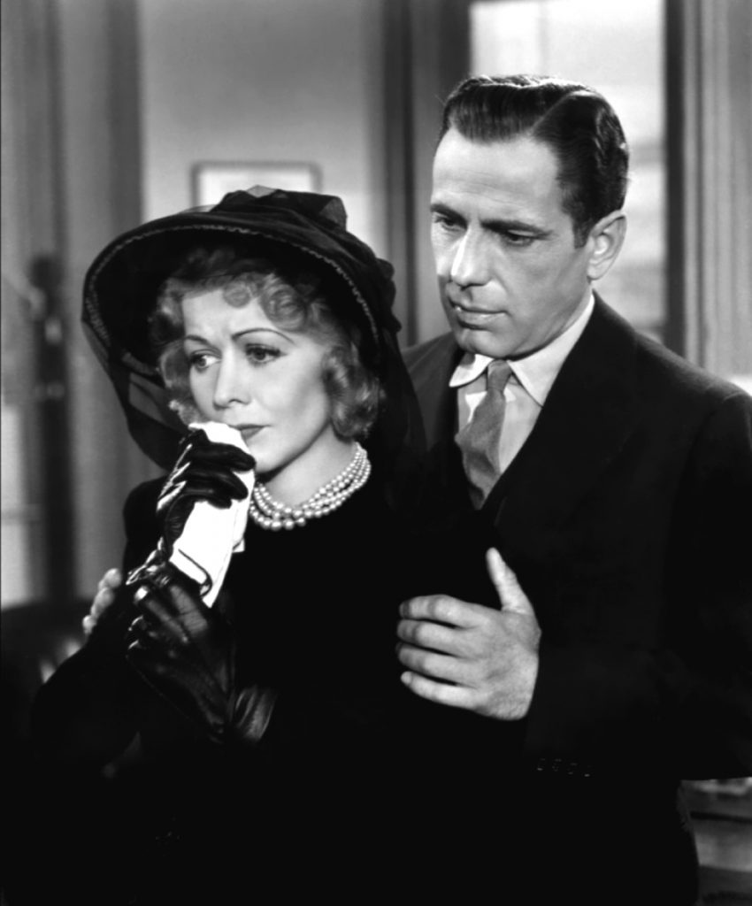
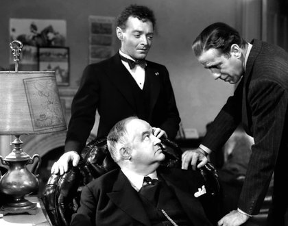
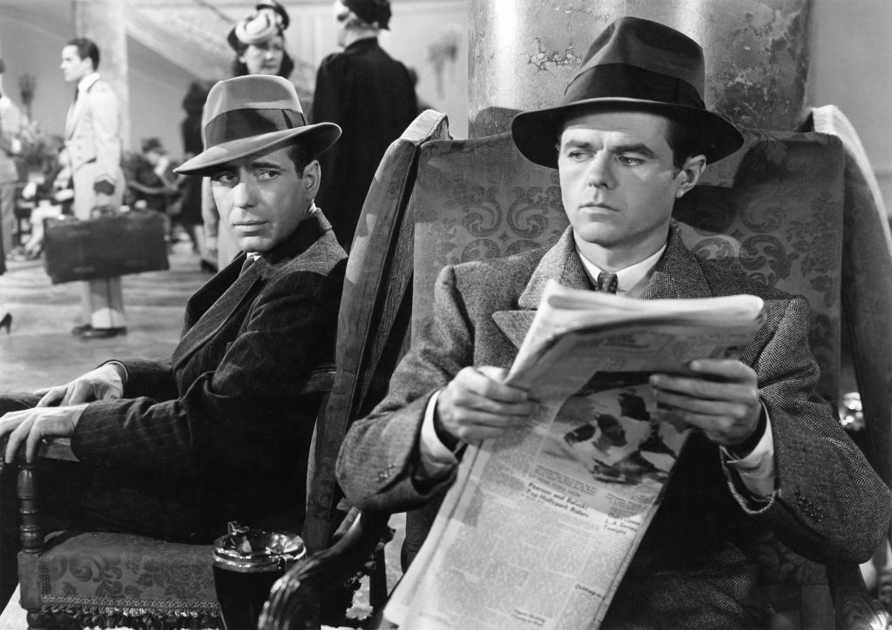
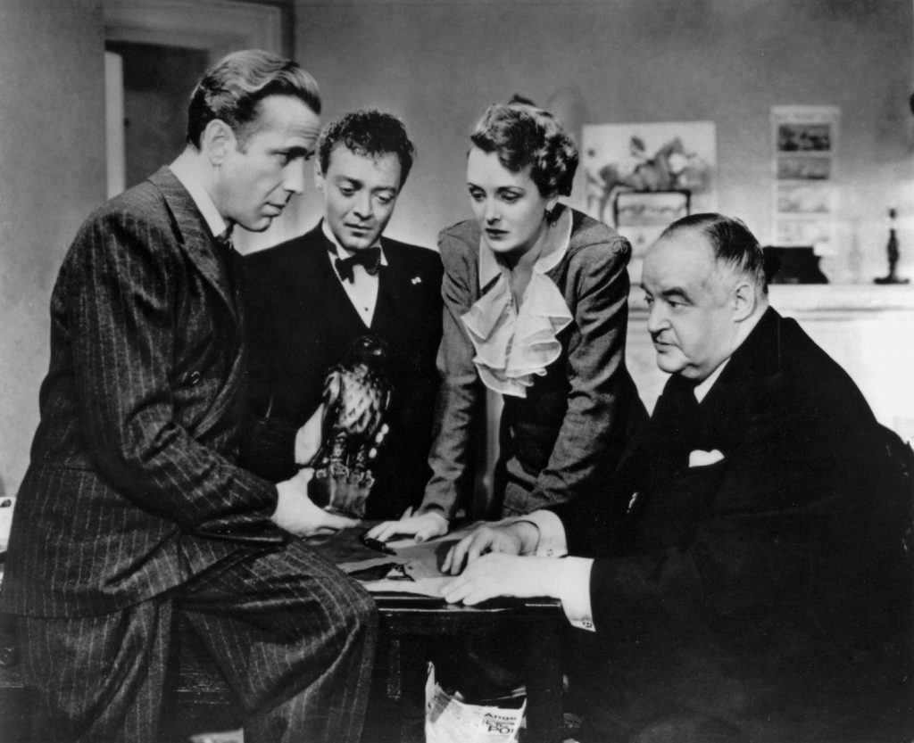

By Lucia Adams
I asked Jack what his favorite films are —predictably for a fellow d’un certain age Shane, Deliverance, African Queen, Treasure of the Sierra Madre, Casablanca and The Maltese Falcon which hit the screen two months before Pearl Harbor, a near-transcription of the pulp novel serialized in 1929 and 1930. Timing was perfect for the debut of film noir, a seismic shift from the chipper Thirties comedies to the darkened vision of the Forties.

Sam with Iva Archer, his late partner’s wife.
A troika of three rebellious spirits transformed the grim weltanschauung into a classic art form, novelist Dashiell Hammet, ex Pinkerton detective and Communist; John Huston, in his directorial debut, prize fighter, outdoorsman, a real Hemingway character, so cruel his friend Humphrey Bogart called him “Monster”; and none other than the actor himself (Thank god George Raft turned down the role), with his ventriloquists’ rapid -fire delivery from smoke filled lungs, the antithesis of the patrician, gentleman-sleuths Charlie Chan or Sherlock Holmes. All three possessed a disgust at the moral rot of the whole bloody world, embracing progressive causes.
Sam Spade, detective, common man, nobody’s fool, no handmaiden to the establishment, like Philip Marlowe, Dirty Harry, Lamont Cranston, James Bond, even Vito Corleone all variants of the archetype, lives in a netherworld of crime and decadence, in the cinematography of Arthur Edeson, bathed in shadows, low light, oblique angles, in claustrophobic settings with little illumination physically or morally.
Jack Warner’s third attempt to transform the novel into celluloid with a small budget and no great expectations the 1941 version scored a big hit, downplaying sex for the Hays Code, unlike its namesake ten years before with its blatant homosexuality, lewd language, nudity, strip searching, adultery, blasphemy, perversion (the 1936 film was just “junk” according to star Bette Davis.)
Bette Davis with Warren William in a previous version.
The twisted plot, Jacobean in its complexity, with its web of intrigue, double-crossings and murder, unfolds in a series of conversations punctuated by violent action, with the action taking place off stage. The audience is left to assemble the clues. Spade, as hard boiled as a 20 minute egg, in his dingy office in 1940 San Francisco, having an affair with his partner Miles Archer’s wife, has a weakness for women.
A “knockout” in a ratty fur appears in the office in the first minute of the film, Mary Astor’s Brigid O’Shaugnessey, with her short hair and sexless body no Veronica Lake or Lizabeth Scott but an androgynous con artist who wants a Floyd Thursby trailed. In no time he and Archer turn up dead and the shady Spade, always somewhere between the law and the offender warns the cops to “Keep your paws off me.”
Brigid seduces Spade but he is ambivalent, perfectly captured since absolutely no sparks fly between the actors, as he takes her face in his hands and kisses her roughly digging his thumbs into her cheeks. Enter Joel Cairo, Peter Lorre, with his Capote lisp the gardenia-perfumed, bow-tied fop fondling his cane obviously gay. The film is never homophobic and gender fluidity is more a plot device to titillate the audience.

“The Fat Man” Kasper Gutman (Sydney Greenstreet right out of Dick Tracy), an obese sinister smoothie whose three minions, Brigid, Cairo, and his gunsel Wilmer, are on the trail of a 16th century jeweled statuette given to Charles V by Maltese Knights, ”We all know the Holy Wars to them were largely a matter of loot” remarks Spade. The dialogue bristles, today comically, as when Spade taunts Wilmer who grunts “They’re gonna be pickin’ iron out of your liver.” and he retorts, (laughing) “The cheaper the crook, the gaudier the patter.”

The ship Paloma burns. A man in a fedora staggers into Spade’s office, drops a package (Walter Huston, director Huston’s father), which he hides. Contretemps, threats, violence and Gutman reveals Brigid shot Archer and Wilmer shot Thursby and the captain Jacobi double crossed by the others. They all however make the fatal mistake of assuming Spade is as corrupt and greedy as they, not aware he is bound by a code of detective’s honor to revenge the death of his partner.

Effie the Girl Friday, in love with Spade as all the girls are in this male Cinderella fantasy, enters with the falcon, Gutman hacks away at it ”Now, after seventeen years”. A Fake! Spade calls the fuzz who pick up the three conspirators on their way to “blow town.” Brigid after much bullying admits she killed Archer to pin the murder on Thursby who Wilmer killed to silence. She says she loves Spade but he ain’t buying it.” Well, if you get a good break, you’ll be out of Tehachapi in 20 years and you can come back to me then. I hope they don’t hang you, precious, by that sweet neck… I’ll be waiting for you. If they hang you, I’ll always remember you.”
When a cop asks what all the fuss was about Spade responds “uh, stuff that dreams are made of”. The studio claims Bogart improvised that quote from the Tempest at the last minute but who knows if that’s true or false.

When a cop asks what all the fuss was about Spade responds “uh, stuff that dreams are made of”. The studio claims Bogart improvised that quote from the Tempest at the last minute but who knows if that’s true or false.
James Agee called Huston the Eisenstein of the thriller, and Hammet said “they made a pretty good picture of it this time, for a change.” The Maltese Falcon is one of only a very few works to earn places in both the Modern Library’s 100 Best Novels and the AFI’s 100 Best Films — despite which my mind wandered as it also does in courtroom dramas and war films.